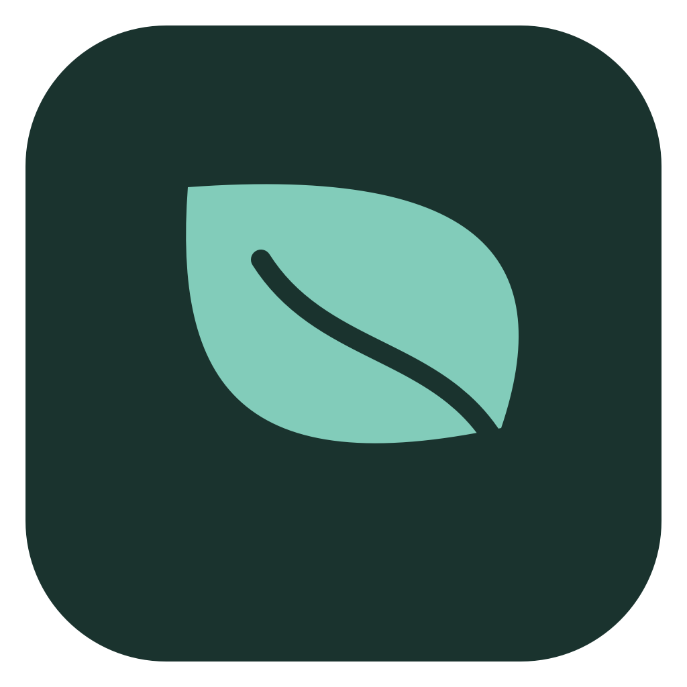

Your curiosity sets
the curriculum.
Start with a concept, a question, or a repository. Get a path with subtopics, examples, and checkpoints.

Palm Download for MacPalm is not Apple-notarized yet. macOS may say Apple could not verify the app. Read the first-open instructions before installing.
You’ve read the docs. Now make it click.
Turn technical topics
and your code into lessons, practice,
and notes that build on each other.
Apple silicon · macOS 15+ · Bring your own API key
Community build · not Apple-notarized. First-open help
Make a prediction before you check the answer.
# Two names. How many lists?
items = [1, 2]
alias = items
alias.append(3)
print(items)PythonTry an answer. The reasoning matters more than the score.
Assignment gives the same list another name. It doesn’t make a copy.
itemsalias[1, 2, 3]one list in memory
When alias.append(3) changes the list,
both names see that change. To get a separate
list, start with items.copy().
Your note tutor can explain a passage, give another example, or help edit the note.
Each practice day adds to your tree.
A break doesn’t
erase what you’ve grown.
Follow the question a little further.
Palm keeps the
explanation, the practice,
and the “oh, now I get it” together.
Start with a concept, a question, or a repository. Get a path with subtopics, examples, and checkpoints.
Trace code, choose a flow, explain an idea. Revisit it with flashcards and spaced review—not just another reread.
Keep code, diagrams, formulas, and linked ideas. Open the knowledge map or ask your tutor without leaving the note.
No Palm account. No app subscription. Your library lives on your Mac, and your API key stays in Keychain.
AI requests send selected context to your chosen provider. You choose the model; its pricing and data policies apply.
Read the code. Make it your own.Keyboard-friendly. Focused. At home on your desktop.
OpenRouter, OpenAI API, ChatGPT, or a compatible endpoint. Start free or choose paid.
MIT-licensed app code, documented decisions, and room to contribute.
Download the disk image, open it, and drag Palm into Applications. See the first-open instructions for the macOS verification warning.
First-open helpCreate an OpenRouter key and paste it into onboarding. Inkling free is the starting option. You can also sign in with ChatGPT, or save an OpenAI API or custom connection.
Get an OpenRouter keyChoose a topic, or add a GitHub repository. Open the first lesson and start thinking.
Connect a repositoryFree endpoints have limits. Inkling free logs prompts and outputs for model improvement and does not allow confidential/personal data. Read its terms, or choose a provider suited to your material. First use may download local learning tools.
Yes. Palm is free to download and its original source code is MIT licensed. There is no Palm subscription. You provide your own AI key: free models may be available, and paid models are billed by their provider. Third-party libraries keep their own licenses.
Palm’s community build is ad-hoc signed and has not been notarized by Apple. The “Apple could not verify” warning means Apple has not verified this app; that wording does not report a malware detection.
If you trust the copy downloaded from this repository, try opening Palm once, then go to System Settings → Privacy & Security → Open Anyway and confirm Open. This approves Palm specifically. Apple’s instructions. Do not use these steps for an alert saying the app will damage your computer or contains malware.
Your saved library, notes, lessons, and choice/ordering practice work locally. Generating new material, tutoring, and grading written answers require your configured model connection. Selected learning context is sent to that provider.
Yes. Add a read-only, fine-grained repository token in Settings → Local tools. Or open a local source folder. Relevant code may be sent to your model, so choose a provider whose terms allow your material. Read the setup guide.
The download supports Apple silicon Macs (M1 or later) running macOS 15 or newer. There is no iPhone or Intel build in this release. Developers can build the app from the published source.
Free & open source. Made for your Mac.